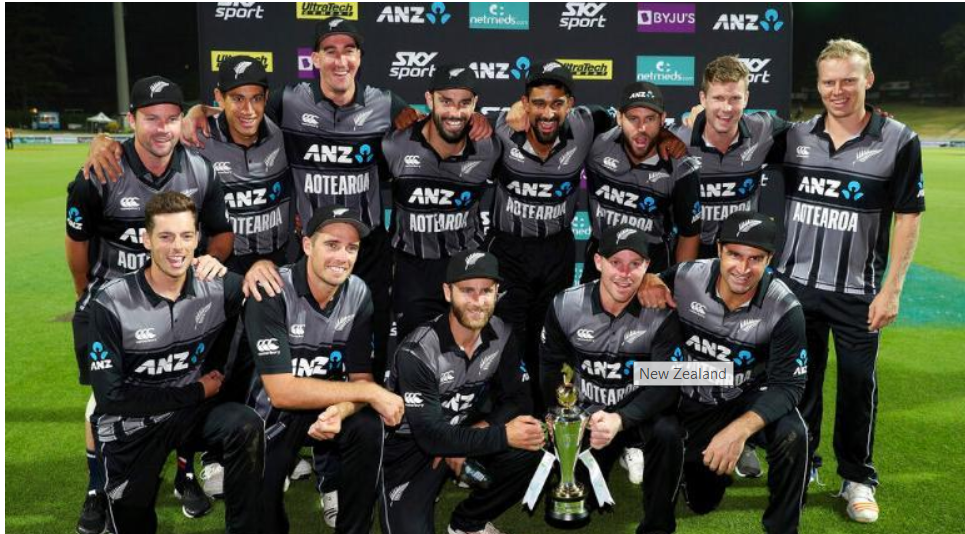

NEWZEALAND CRICKET TEAM
The New Zealand national cricket team represents New Zealand in international cricket. Nicknamed the Black Caps, they played their first Test in 1930 against England in Christchurch, becoming the fifth country to play Test cricket. From 1930 New Zealand had to wait until 1956, more than 26 years, for its first Test victory, against the West Indies at Eden Park in Auckland.[8] They played their first ODI in the 1972–73 season against Pakistan in Christchurch.
As of 3 September 2019, New Zealand have played 1323 international matches, winning 504, losing 598, tying 12 and drawing 165 matches while 43 matches ended as no result. The team is ranked 2nd in Tests, 3rd in ODIs and 6th in T20Is by the ICC.[10] New Zealand defeated South Africa in the semi final of the 2015 World Cup, which was their first win in the a world cup semi final and hence they made their maiden appearance in a World Cup Final, but they ultimately lost to Trans-Tasman rivals Australia[11]. In the next World Cup in 2019, New Zealand again reached the final which they agonisingly lost to the hosts England on boundary count after the match and the subsequent Super over both ended as ties
India's 1983 World Cup victory was a major turning point for Indian as well as world cricket. The win boosted the popularity of cricket in India, which was until then restricted to the urban areas. It also increased the popularity of one-day cricket in India as well as in general. India began to take ODI cricket seriously after the World Cup win and soon emerged as one of the best teams in ODI cricket. Indian corporates too started to take an interest in cricket and began to sponsor many international tournaments, marking the start of the rise of India as the leading financial power in cricket.